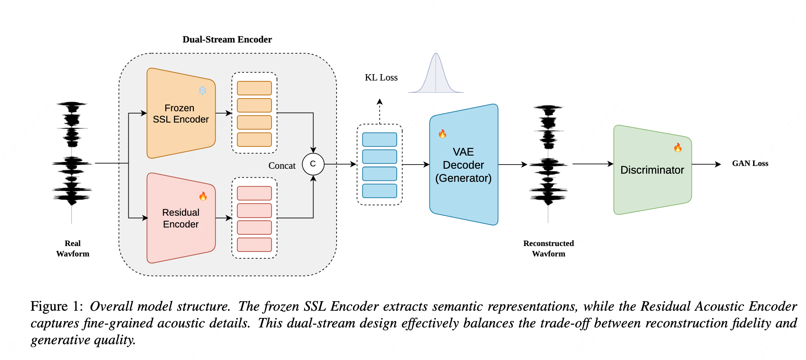

Zero-shot text-to-speech (TTS) relies on robust speech representations. However, current speech tokenizers face a fundamental trade-off: acoustic codecs preserve high-fidelity audio but lack linguistic constraints, causing content errors during generation, whereas semantic tokens from self-supervised learning (SSL) models ensure precise text alignment but discard some acoustic information. To bridge this gap, we propose SARA, a dual-stream VAE that directly fuses a frozen SSL semantic anchor with a dedicated residual acoustic encoder. This effectively mitigates the dilemma, creating an efficient and compact latent space without relying on complex regularizers. SARA achieves superior reconstruction quality over strong baselines. Furthermore, in downstream zero-shot TTS tasks, it yields highly natural and expressive synthesis quality, and maintains robust generation performance even under accelerated inference, offering a favorable trade-off between synthesis speed and computational cost.

Fig.1 The architecture of SARA.
2. Samples on SARA-based F5-TTS-small: Comparison with Models